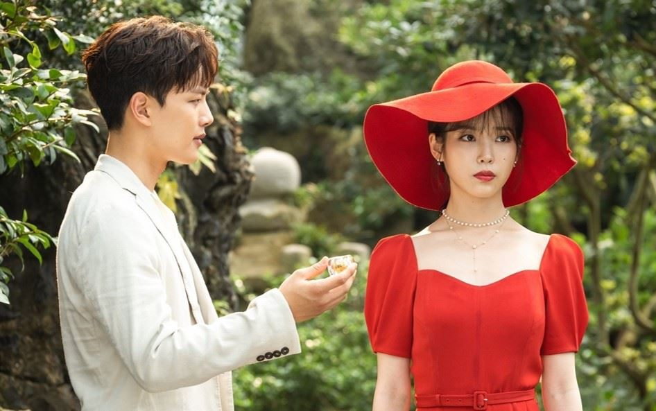

Plot Summary
Hotel Del luna is not like any ordinary hotel; rather it is a gateway to the realm of the living and the dead. A supernatural place that is not visible in its real form during daytime and humans can only come across the place under special circumstances. Its staff and clients are all ghosts except for Gu Chan sung the new manager. As he was given the power to see the ghosts by Man wol the owner of the Hotel. Man wol’s soul is bound to the hotel due to a huge sin she committed a millennium ago. The clients wait at the hotel while coming to terms with unfinished business in their former life before they pass to the afterlife and continue in the cycle of reincarnation. Hence Gu Chan sung meets a lot of ghosts with unfinished business who refuse to leave.
The staff in particular have not left the hotel for decades or centuries as they have some unsettled grudges that tie them to the place in waiting. Hence Gu Chan sung, a human, was recruited as they need to interact with the normal world in certain instances like paying bills or fulfilling the ghost requests involving still living relatives or friends. As a result of manipulation by the deity, Mago Jang Man wol meets Gu Chan sung’s father and makes a deal with him that his son has to work for the hotel after he turns 20 years old in exchange for his life. He agrees in order to save his son and we see that Gu Chan sung grows up to be a fine, level-headed young man with a soft heart. Through Gu Chan sung the mysteries and secrets behind the hotel and its owner are revealed.
Review
The series twists and turns around plenty of subplots throughout the series, the heart of it lies in the tortured and grief-stricken soul of Man wol. As a way of atoning for her sins she was forced to become the owner of Hotel Del luna, a gateway between the living and spiritual realms, her world is turned upside down when hotelier Chan sung arrives to become the new manager. As Chan sung learns more about the hotel and the staff Hyun Joong, Mr. Kim, and Ms. Choi, what follows is an unlikely love story woven around elements of horror and supernatural drama. It is really impressive to witness how Del luna manages its different genres. It is not uncommon to see the episodes effortlessly change between intense horror and supernatural frights over to genuine laugh-out-loud comedy in the next scenes without it feeling forced or contrived.
It is all thanks to the great script writing but also because of IU who steals the show here. Due to her award-winning performance, her portrayal of Man wol steals all the spotlight. Even Jin goo given his magnificent performance of The Crowned clown earlier that year, it is impressive that he doesn’t share most of the spotlight with IU. All thanks to IU having top-notch charisma and acting in Del luna. As each episode clocks in at about 70 minutes, there is a consistency to Hotel Del luna that allows each episode to weave an individual tale while progressing the main narrative, especially midway through the series more stand-alone segments come to the foreground. The exploration of Man wol’s painful past is nicely implemented and adds an element of mystery to the proceedings this helps keep the show unpredictable and thorough. Along with Man wol’s meaningful character arcs, we are presented with other characters with their own arcs exploring their pasts, wishes, and growth. To be honest I find Chan sung as the weakest character out of all as he doesn’t show much growth or development in character over the weeks except for his increasing fondness of Man wol.
Reflection

Hotel del Luna was more than just a fantasy romance drama. It managed to deliver resounding life lessons viewers can all learn from. Despite its otherwordly theme, Jang Man Wol, Goo Chan Seong, as well as the rest of the characters, were representations of ordinary people grappling to understand their existence. They depicted emotions that viewers can relate to, most especially those we struglle to take control of such as anger, grudges and pain.
In the midst of the supernatural elements was the presence of human emotions. The drama clearly presented the driving force behind Man Wol's attitude. Her past explained her actions, though she might have been blinded to the truth about Chung Myung's betrayal. Her clinging to that anger and hate for so long was totally understandable as she never knew the real reason.
It does not matter whether you live for a short or a long period of time. What matters is you have touched people enough for a legacy to live on. Hotel del Luna just conveyed that message loud and clear.